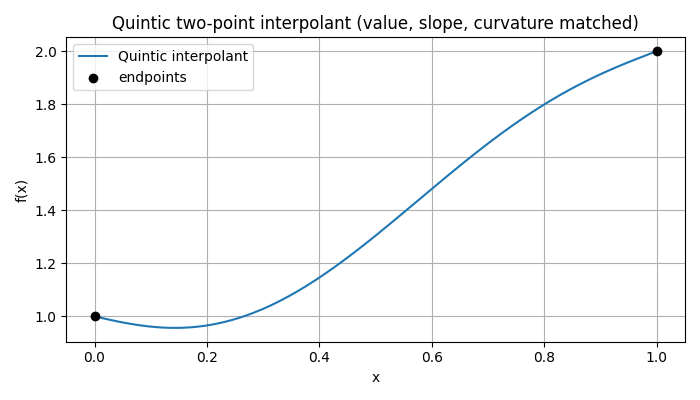
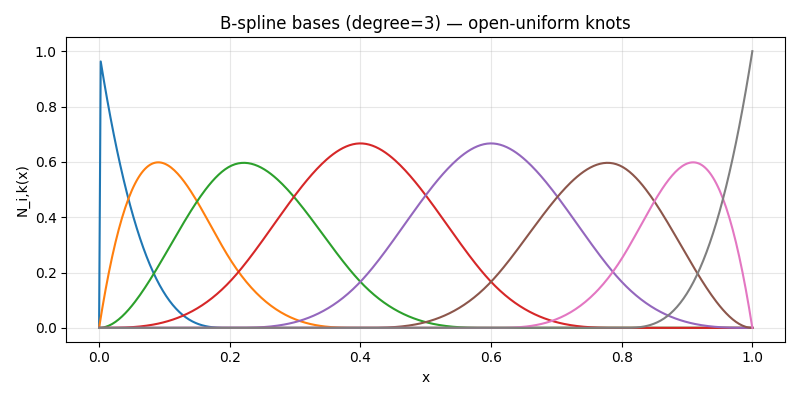
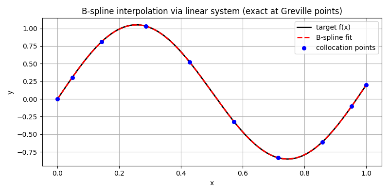
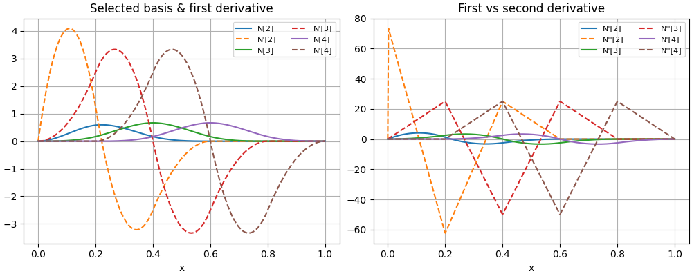

Interpolation Functions¶
makeInterpFuncs¶
Signature¶
makeInterpFuncs(y0, dy0, d2y0, y1, dy1, d2y1) -> Tuple[Callable, Callable]
Purpose¶
Build a quintic (5th-degree) interpolant on the normalized domain x ∈ [0,1] that matches value, first, and second derivatives at both endpoints:
It returns two callables:
f(x): the interpolating polynomial,df(x): its first derivative.
Intuition: a quintic has 6 coefficients, exactly the number of endpoint constraints (value/slope/curvature at 0 and 1). We fix three coefficients from the left-end constraints and solve a small 3×3 linear system for the remaining ones using the right-end constraints. This is the classic Hermite-type two-point interpolation with up to second derivatives.
Parameters, returns and Raises¶
Parameters
y0, dy0, d2y0: value, 1st and 2nd derivative atx=0.y1, dy1, d2y1: value, 1st and 2nd derivative atx=1.
Returns
f(callable): evaluates the quintic at scalar/arrayxin[0,1].df(callable): evaluates the first derivative at the samex.
(No custom exceptions; the internal 3×3 system has a fixed, well-conditioned matrix.)
Notes¶
-
The polynomial is \(p(x)=a_0+a_1 x+a_2 x^2+a_3 x^3+a_4 x^4+a_5 x^5\).
-
From the left endpoint:
\[a_0=y_0,\quad a_1= d y_0,\quad a_2=\tfrac{1}{2} d^2 y_0\] -
The remaining \((a_3,a_4,a_5)\) come from the right endpoint via a fixed 3×3 system (hard-coded matrix), solved against the residuals after subtracting the known \(a_0,a_1,a_2\).
- Both
fanddfuse Horner’s scheme for numeric stability and speed. - To interpolate over an arbitrary interval \([x_a,x_b]\), map \(x\) to \(s=(x-x_a)/(x_b-x_a)\in[0,1]\). Endpoint derivatives must be scaled:
with \(h=x_b-x_a\) (same at the right end).
When to use and examples¶
Use when you need a smooth segment with continuous value, slope, and curvature at both ends (e.g., path stitching, potential profiles, or boundary-matched trajectories, without overshoot typical of low-order polynomials).
see the full test script in tests/helper_functions/interpolation_functions for more
Example
# Endpoint constraints on x in [0,1]
y0, dy0, d2y0 = 1.0, -0.5, 0.75
y1, dy1, d2y1 = 2.0, 0.8, -0.25
f, df = makeInterpFuncs(y0, dy0, d2y0, y1, dy1, d2y1)
- Quintic Interpolation 
cubicInterpFunction¶
Signature¶
class cubicInterpFunction:
def __init__(self, y0, dy0, y1, dy1) -> None: ...
def __call__(self, t) -> np.ndarray: ...
Purpose¶
Cubic two-point interpolant on the normalized parameter t ∈ [0,1] that matches value and first derivative at both ends. Implements the Bézier form that is algebraically equivalent to Hermite interpolation with endpoint slopes.
Intuition: a cubic has 4 degrees of freedom—exactly the endpoint value/tangent pair at t=0 and t=1. Writing it in Bézier form makes the geometry transparent: the middle control points are just the endpoints nudged in the tangent directions.
Parameters, returns and Raises¶
Parameters
y0, dy0: value and slope att=0.y1, dy1: value and slope att=1. All can be scalar or array-like (vectors/fields); shapes must be broadcastable to a common shape.
Returns
- Calling the instance:
y = cubic(t)evaluates the interpolant at scalar/arrayt; the output shape followstand the shapes ofy0/y1.
Notes¶
- Bézier control points (from Hermite data):
$$P_0 = y_0,\quad P_1 = y_0 + \tfrac{1}{3}\,d y_0,\quad P_2 = y_1 - \tfrac{1}{3}\,d y_1,\quad P_3 = y_1 $$
and
$$B(t)=(1-t)^3P_0+3(1-t)^2 t P_1+3(1-t)t^2 P_2+t^3 P_3 $$
- Endpoint slopes & reparameterization: if you want slopes with respect to a physical coordinate \(x\in[x_a,x_b]\) (not \(t\)), map \(t=(x-x_a)/h\) with \(h=x_b-x_a\) and set
dy0 = (dy/dx at x_a) * h,dy1 = (dy/dx at x_b) * h.
When to use and examples¶
Use when you need a compact, slope controlled segment between two states—great for smooth paths, schedules, or boundary-matched profiles—without the extra curvature constraints of the quintic.
see the full test script in tests/helper_functions/interpolation_functions.py for more
Example
# 2) Cubic two-point interpolation (Bezier/Hermite): slope control
y0, y1 = 0.0, 1.0
dy0, dy1 = 2.0, -1.0
cubic = cubicInterpFunction(y0, dy0, y1, dy1)
ts = np.linspace(0, 1, 400)
ys = cubic(ts)
# Expected: curve starts rising fast (positive dy0) and ends with negative slope (dy1).
_safe_div¶
Signature¶
_safe_div(num, den) -> np.ndarray
Purpose¶
Elementwise division with broadcasting that returns 0 where den == 0.
Used inside the Cox–de Boor recursion to safely handle repeated knots (zero denominators) without producing NaNs.
Returns
- Array with the broadcasted shape of
numandden, containingnum/denwhereden≠0and0whereden=0.
Nbspl¶
Signature¶
Nbspl(t, x, k: int = 3) -> np.ndarray
Purpose¶
Evaluate the B-spline basis functions of degree k for a given knot vector t at points x, using the Cox–de Boor recursion.
This returns the basis matrix \(N\) so you can build a spline curve or field as
where \(\text{nb} = m - k - 1\) is the number of degree-k basis functions (with m=len(t)) and \(c_i\) are your control coefficients.
Intuition (how it works): • Degree 0 (piecewise constants): each \(N_{i,0}\) is 1 on the knot interval \((t_i, t_{i+1}]\) and 0 elsewhere (this code uses a right-closed convention to mirror the legacy behavior). • Elevate degree recursively: for \(p=1..k\),
\[ N_{i,p}(x)\;=\;\frac{x-t_i}{t_{i+p}-t_i}\,N_{i,p-1}(x)\;+\;\frac{t_{i+p+1}-x}{t_{i+p+1}-t_{i+1}}\,N_{i+1,p-1}(x). \]The helper
_safe_divmakes each fraction zero if its denominator vanishes (e.g., repeated knots), which is the standard convention.
Parameters, returns and Raises¶
Parameters
t(array_like, shape(m,)): Non-decreasing knot vector. Repeated knots are allowed (lower continuity).x(array_like, shape(n,)): Points where you want the basis evaluated.k(int, default3): Degree of the spline (cubic by default). Must satisfyk <= len(t) - 2.
Returns
N(np.ndarray, shape(n, m-k-1)): Basis matrix with rows = evaluation points and columns = basis functions. EntryN[j, i]is \(N_{i,k}(x_j)\).
Raises / Assumptions
ValueErrorifk > len(t) - 2.- Assumes
tis non-decreasing. If many knots are identical, the corresponding denominators are zero and the code returns 0 for those fractions (as desired).
Notes & properties (useful facts)¶
- Local support: \(N_{i,k}(x)\) is nonzero only on the interval \([t_i,\,t_{i+k+1}]\). Hence each row of
Nhas at mostk+1nonzeros. -
Partition of unity: for \(x\) strictly inside the knot span, \(\sum_i N_{i,k}(x)=1\). At exact knot locations the right-closed convention assigns the mass to the right interval:
-
At \(x = t_0\): all zeros (no interval to the left),
- At \(x = t_{m-1}\): the last basis evaluates to 1.
- Continuity: with simple knots (no repetition), splines are \(C^{k-1}\). A knot of multiplicity
rreduces continuity to \(C^{k-r}\).
When to use and examples¶
Use B-splines when you need smooth, local-control interpolation/approximation with tunable continuity via the knot vector—ideal for smooth paths, potentials, or any 1D field where you want stability and partition-of-unity behavior.
see the full test script in tests/helper_functions/Interpolation_functions for more
Examples
- B-spline bases: partition of unity, non-negativity, local support
""""
=== Test 3: B-spline bases (partition of unity & local support) ===
knots = [0. 0. 0. 0. 0.2 0.4 0.6 0.8 1. 1. 1. 1. ]
Partition of unity: max|sum_i N_i(x)-1| = 1.0
Non-negativity: min(N) = 0.0 (should be >= 0)
"""

What the figure shows:
- Partition of unity: at every
x, the colored curves sum to 1 (visually, one “stack” fills the unit height). - Non-negativity: each basis is ≥ 0.
-
Local support: at any
xonlyk+1=4curves are nonzero (for cubic). This is why changing one coefficientc_ionly affects a small neighborhood in the final spline. -
Exact interpolation via
N($x_i$) c = y(Greville collocation)
f = lambda x: np.sin(2*np.pi*x) + 0.2*x
y = f(Xi)
# Square collocation system (nb x nb)
N_colloc = Nbspl(t, Xi, k=k)
c = np.linalg.solve(N_colloc, y) # exact at Xi
# Evaluate on a fine grid
xf = np.linspace(0, 1, 600)
Nf = Nbspl(t, xf, k=k)
Sf = Nf @ c
"""
=== Test 5: Exact interpolation via B-splines (solve for coefficients) ===
Max residual at collocation points (should be ~1e-12): 2.220e-16
Max abs error on fine grid (approx. quality, not necessarily tiny): 2.234e-03
"""

What the figure shows (caption/notes):
- The red dashed spline matches the black target exactly at the blue Greville points (interpolation).
-
Between collocation points the match is approximate (still very good here because we used 10 cubic bases on
[0,1]). -
For exact interpolation, use Greville points to build a square, well-conditioned system and solve
N @ c = y. - For fitting/denoising, solve
min_c ||N c − y||(possibly with a smoothness regularizer).
Nbspld1¶
Signature¶
Nbspld1(t: np.ndarray, x: np.ndarray, k: int = 3) -> Tuple[np.ndarray, np.ndarray]
Purpose¶
Same idea as Nbspl, but also returns the first derivatives of the degree-k B-spline basis with respect to x.
Internally it builds and caches all bases up to degree k, then uses the closed-form derivative:
with the convention that any term with zero denominator contributes 0 (repeated knots).
Parameters, returns and Raises¶
Parameters — same as Nbspl(t, x, k).
Returns
N(ndarray, shape(n, m-k-1)): basis values \(N_{i,k}(x_j)\).dN(ndarray, shape(n, m-k-1)): first derivatives \(\partial_x N_{i,k}(x_j)\).
Raises / Notes
ValueErrorifk > len(t) - 2.- Uses the same right-closed seed for the degree-0 basis as
Nbspl. - At clamped ends (
openknots), derivatives near the extreme knots are well-defined but finite-difference checks must avoid crossing the boundary row (see fix below).
Nbspld2¶
Signature¶
Nbspld2(t: np.ndarray, x: np.ndarray, k: int = 3) -> Tuple[np.ndarray, np.ndarray, np.ndarray]
Purpose¶
As above, but also returns the second derivatives. It first computes all first-derivative tables for degrees 0..k, then applies the same closed-form again on dN_{*,k-1}:
with the same zero-denominator convention.
Parameters, returns and Raises¶
Parameters — same as Nbspl.
Returns
N(ndarray, shape(n, m-k-1)): basis values.dN(ndarray, shape(n, m-k-1)): first derivatives.d2N(ndarray, shape(n, m-k-1)): second derivatives.
Raises / Notes
ValueErrorifk > len(t) - 2.- For
k=0ork=1, the second derivative is identically 0 (as expected).
Examples¶
see the full test script in tests/helper_functions/Interpolation_functions for more
- Basis Functions derivatives (first and second)
"""
=== Test 4: dN/dx and d²N/dx² vs finite differences (sanity) ===
Max |dN - FD| = 1.374e-03
Max |d2N - FD| = 3.208e-01
Expected: small (method consistent); edges less accurate (central FD not applicable).
"""

- Basis Functions with repeated knots (reduce smoothness)
"""
=== Test 6: Repeated interior knot reduces smoothness (see jump in derivatives) ===
Interior knot at x≈0.5: left slope=-11.423134, right slope=-11.644709
Expected: visible change in slope at the repeated knot (reduced continuity).
"""

"""
=== Test 7: Expected error cases ===
k too large (Nbspl): Nbspl: require k <= len(t)-2
x not 1D (may raise/behave unexpectedly): ValueError('operands could not be broadcast together with shapes (2,1,3) (9,) ')
knot length invalid (Nbspl): Nbspl: require k <= len(t)-2
(Equal for Nbspl, Nbspld1 and Nbspld2)
"""